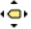
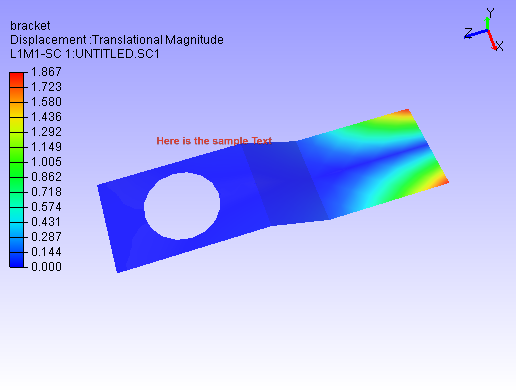

Labels¶
This section describes how labels can be created and edited.
Types of Labels:
User Notes
Annotation to Geometry:
These labels are created by user as an observation which is annotated to a particular part or element or node. A line connects the label and geometry. Labels are moving according to part or view transformation. Image Labels have text as well as image data.
Annotation to Scene:
These labels are created by user as an observation which is annotated to the current view or scene. Labels are fixed in screen either by absolute or relative to the viewport size. Absolute position labels will be clipped if viewport is resized down.
Model Name Labels
These labels displays model name if more than one model is merged.
Part Property Labels
These labels displays part properties and user defined part attributes. By default it displays Part Name.
Probe Labels
These labels are generated to display result values on user probe on Node or element IDs.
Measurement Labels
All measurement values are displayed in labels. These are generated using Measure module.
Image Labels
Image labels function helps user to add relevant images to the scene or viewpoint and improves the reporting experience.
Rich Text Labels
User can add rich texts, tables, images and links in Rich Text Labels. This can be considered as advanced Image labels.
Label Tool bar
User can find Label tool bar visible by default in top.

Add Notes |
Allows user to enter his observations into a label through a dialog interface. |
Add Image Label |
Allows user to a label with images. Image data can be imported from image file or captured from screen. |
Add Table |
Allows user to create table with multiple rows and columns, which acts same as any other annotation. |
Add Rich Text Labels |
Allows user to create a label with rich text content like multi font, multi color, tables. |
Move Labels  |
Allows user to move a label from place to place. |
Fit Labels |
Fits all labels into the viewer window. |
Delete Label |
Allows user to delete a user clicked label. |
Delete All Labels |
Deletes all types of labels in a single click. However it prompts user to confirm the action. |
Delete All Hidden Labels |
Deletes all hidden labels. |
Delete All Probe Labels |
Deletes only probe type labels in a single click. |
Hide Label |
Allows user to hide a user clicked label. User can bring it back using Show All Labels option. |
Show Visible Labels Only |
Hides all labels of which attached points on model are hidden in current scene. |
Auto Visible Labels |
Continuously shows or hides labels based on label attached point in the model visibility. |
Hide All labels |
Hides all labels in single click. |
Hide All Probe Labels |
Hides all probe type labels. |
Show All labels |
Shows all labels. This brings back all hidden labels to viewer. |
Invert Show Labels |
Inverts the visibility of labels. Visible labels hides and Hidden labels shows up. |
Auto Fit Labels |
Continuously fits labels into viewer window during user interaction. |
Arrange Labels |
Arranges all CAE probe labels according to the Arrange Labels mode. |
Show Model Labels |
Displays model name labels. |
Show Probed Parts |
Displays the parts which has probed labels. Other parts will be hidden. |
Show Header Legend |
Displays Header Legend. It give full description or full name of the probe table headers. |
Label Font Settings |
Allows user to edit label font settings applicable to CAE Probe labels and Measurement Labels. |
ID Cell |
Applies to ID cell of probe labels. |
Header Cells |
Applies to Header cells of probe labels. |
Value Cells |
Applies to Value cells of probe labels. |
Font |
Allows user to select font face name. |
Font Size |
Allows user to select font size. |
Line Width |
Allows user to change width of connecting line in pixels. |
Background |
Allows to enable background and its color. |
Text Color |
Allows user to edit color of label text. |
Border |
Allows user to enable border and its color. |
Line Color |
Allows user to edit label connecting line color. |
Keep Previous Labels |
Keep existing labels and allows user to probe further. |
Show ID |
Show/hides ID cell in probe label. |
Note
Modifications will be applied to all Probe labels and Measurement labels.
To format individual probe label, use label context menu.
How to add an annotation to geometry?
Click ‘Add Notes’ icon .
Make sure that ‘Attach Geometry’ option is checked in the popped up ‘Add Notes’ dialog.
Enter the observation text in the box area.
Change font name, size, background and border colors if necessary.
Click ‘Add’ button.
Click a point in the viewport screen where the label is to be positioned.
Move the cursor to the model.
An line is extended from the label position as mouse moves.
Click a point on the part or a particular vertex or position to attach the label.
Now the line is drawn between label position and a point in the model part.
How to add an annotation to scene?
Click ‘Add Notes’ icon .
Uncheck the ‘Attach Geometry’ option.
Now the ‘Snap Vertex’ option is changed to ‘Relative Position’.
Annotation to scene is a fixed label either absolutely or relative to viewport size.
Absolute labels may be clipped when viewport is resized down.
Whereas relative position labels will be visible in a minimum viewport size.
Click Behind Scene option, to set the image behind model.
Before Resizing
After Resizing
How to edit user notes?
Double Click on the user notes.
It pops up Edit Notes dialog,
Modify text and settings,
Click ‘Update’ button to apply the modifications.
How to move label positions?
Click ‘Move Label’ icon in the toolbar.
It sets mouse mode to ‘move label’.
Click on the label to be moved.
Drag the mouse to the new label position.
Release the mouse.
Click the move label icon again to reset the mouse mode to default.
All types of label can be moved using this option.
In addition, this option can be used to move the legend also.
How to delete labels?
To delete all labels, click ‘Delete All Labels’ icon
in the toolbar.
It prompts user to confirm with a message.
Click ‘Yes’ to confirm.
To delete a particular label, click ‘More…’ icon in the Label toolbar.
It drops down a menu.
Select Delete Label option.
Click on a label to be deleted.
Unselect Delete Label option again to reset the mouse mode.
How to show/hide labels?
VCollab provides multiple options to set visibility to labels.
To hide a particular label, check the ‘Hide Label’ option in drop down menu and click the label.
To hide all labels, click ‘Hide All labels’ option.
To show all labels, click ‘Show All Labels’ option.
To show only the labels of which, label attached positions are visible to the user, click ‘Show Visible Labels Only’ option.
To show only the visible labels during user interaction, click ‘Auto Visible Labels’ option.
‘Auto Visible Labels’ toggles labels visibility based on its label attached position visibility.
Arrange Labels¶
This function is applicable for CAE Probe labels only. All labels will be arranged based on the user selected algorithm or mode.
Near
Aligns Labels’ bottom left corner positions with probed vertices. Overlapping is unavoidable here.
Top-Bottom
Distributes labels to top and bottom of the model evenly based on its attached positions.
Compact
Places the label anywhere around the attached position without overlapping.
Rectangular
Distributes labels either to left or right or top or bottom of the model bound rectangle.
Circular
Distributes labels around the model bound circle.
Silhouette
Distributes labels outside the silhouette edges of the model.
Table Annotation¶
VCollab Pro helps user to create annotation table with multiple rows, column and a header.
Attach Geometry |
Allows user to attach this table to a point on the model. |
Behind Scene |
Allows user to set the 2D image behind the model. This option is ignored if Attach Geometry is ON. |
Relative Position / Use Node ID |
When Attach Geometry is checked, then Relative Position check is turned into Use Node ID. Relative Position stores position of table relative to window and changes accordingly with window resize. Use Node ID allows user to enter node id in the Node ID text box, instead of picking node id in viewport. |
Model |
Displays model name if Use Node ID is enabled. |
Part |
Displays Part Name if Use Node ID is enabled. |
Node ID |
Enables if Use Node ID is enabled and allows user to enter node ID to be attached with. |
Rows, Columns |
Allows user to define table rows and columns size. |
How to add tables?
Click the dropdown menu located at the end of Labels tool bar.
Click Add Table option to pop up Add Table dialog box.
Define the number of rows and columns using given interfaces.
Double click the cell to edit the contents. For example,
Enter the texts and click OK.
Click on the viewport.
User can find the table as below.
Relative Position and Attach Geometry options functions same way as in the Add Notes annotations.
Enabling Attach Geometry option displays Use Node ID options.
It helps user to enter model, part and node ID to be attached with.
To edit a table, double click on the specific table.
It drops down Table context menu
Edit Format allows user to edit font name, size, background etc. same like in probe table, except the Update All Viewpoints option.
Edit Table pops up Edit 2D Table or Edit 3D Table dialog box based on Attach Geometry option.
Field Text allows user to edit current field text quickly.
Display option allows user to transpose the table and to highlight the table.
More option allows user to add, delete and insert columns or rows.
Context menu for 3D Table is slightly different from the 2D Table context menu. It has ‘Zoom To’ options which focus the attached point in different levels.

Image Annotation¶
User can add images into annotation labels using ‘Add Image Labels’ option.
Attach Geometry |
Allows user to attach this image label to a point on the model. |
Behind Scene |
Allows user to set the 2D image behind the model. This option is ignored if Attach Geometry is ON. |
Relative Position |
Relative Position stores position of label relative to window and changes accordingly with window resize. |
Font and Text |
Allows user to select font name, font size and text color for label text. User can enter the text in the box if required. |
Background and Border |
Allows user to choose to apply background and border colors. |
File |
Allows user to pick an image file from the disk. |
Capture |
Allows user to capture image from the viewer window. |
Image Mode |
Allows user to select image mode from the list Center, Stretch and Fit View options. |
Text Position |
Allows user to place text in the top or bottom of label (above or below the image) |
Text Align |
Allows user to align the text horizontallly from left, center and right optios. |
Position |
Allows user to set position directly using normalised screen coordinages i.e. position (x,y) values varies between 0 and 1. |
Dimension |
Allows user to set the dimension of the image label panel using normalized width and height. |
Add |
Adds the image lable in viewer accordingly. |
Cancel |
Cancels all settings and closes the panel. |
Normalized Position and Dimension
How to add Image labels?
Click the dropdown menu located at the end of Labels tool bar.
Click “Add Image Labels…” option to pop up Add Image Label dialog.
Enter text if required.
Click ‘File’ button to select an image file from the computer.
Click ‘OK’ in the file browser dialog. Or
Click ‘Capture’ button to get the image from the viewer.
Panel disappears and a rectangular window appears in the viewer.
User can resize and move the window as required.
Click ‘Capture’ zone in the window.
Add Image panel appears again.
Image file path should appear in the text box below ‘File’ button.
Change Image Mode, Text Position and Text Align options if required.
Click ‘Add’
Click on the model if ‘Attach Geometry’ was checked.
Click Behind Scene option to send the image behind the model.
Click on the viewer anywhere if ‘Attach Geometry was unchecked.
Now label with image will be displayed.


How to edit Image label?
Double click the Image label.
Edit Image Label panel pops up.
User can modify the image using ‘File’ and ‘Capture’ options.
Click ‘Update’ button to apply the modifications.
Rich Text Labels¶
Using Rich Text labels, User can format the content in a html editor. Interface for this option is provided in the drop down menu under the User notes toolbar as below,
Rich Text Panel

Background and Border |
Allows user to choose to apply background and border colors. |
Compact |
Crops the Image to fit the text. |
User Values |
A flag to be used to enable image width and height options for user values. |
Wi and Hi |
Wi and Hi are width and height of the image to be captured. |
Behind Scene |
Allows user to send the 2D Rich Text Labels behind the model. This flag will be ignored if Attach Geometry is ON. |
Stretch |
By default all the rich table content as Image with stretch option. If unchecked, Fit View mode is considered with fixed aspect ratio. |
Attach Geometry |
Allows user to attach this label to a part/model. |
Relative Position |
When Attach Geometry is checked, then Relative Position check appears. Relative Position stores position of label relative to window and changes accordingly with window resize. |
Label Size |
Allows user to control the dimension of the rich text label window to be updated with user given W,H values or not. |
W,H |
User defined width and height of the rich text label (not the image width and height) |
X,Y |
User defined position of the rich text label. Valid values are between 0 to 1 (normalized). |
OK |
Adds the image lable in viewer accordingly. |
Cancel |
Cancels all settings and closes the panel. |
Steps to Rich Text Labels
Click User Notes drop down menu and click Add Rich Text Labels
It pops up Add Rich Text Label dialog, with Rich Text Editor.
All the menu and toolbar options in the dialog are self explanatory to format the content.
Modify Background and Border using the popup windows if required.
Click OK and wait for a status bar message in the main window.
Follow the instruction appears in the status bar.
Click on the screen where ever user wants.
Label will be positioned there.

Double Click on the label to be edited.
Edit Rich Text Label dialog will pop up.

Check Behind Scene option to send the label behind the model.

Check Compact to make the content compact.

UnCheck Background and Border options.
